ICE Annual reviewer conference 2026#
27/03/2026
ICE President - David Porter#
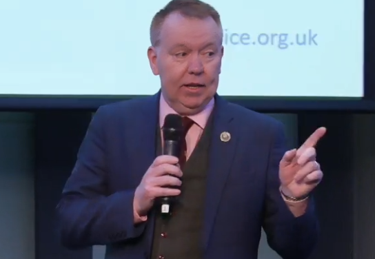
You, me and the ICE
How do you find your place in the ICE?
The more effort I put into the ICE, the more I got out of it.
Engineers need to be better communicators. It’s not just technical excellence. We need to convince people of the value of infrastructure.
David prepped for a Council meeting with technical information, but the Councillors were not interested, they only wanted to understand how much disruption the project would cause. Understand your audience.
Not being an expert in a Candidate’s specialism isn’t a disadvantage. They need to communicate clearly to you.
Update from ICE’s Membership division#
Rebecca Carey
New strategy for challenges facing our profession
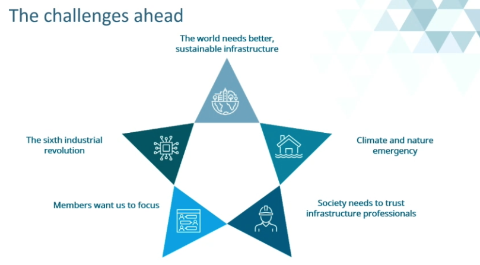
Our vision is for a world where infrastructure enables people and the planet to thrive.
Trusted
Sustainable
Intelligent
Infrastructure engineer designation is now available to apply for.
ICE Connect - database is online
ICE is looking to promote Civil Engineering to young people through various initiatives.
The ICE code of professional conduct is being changed
We focused on:
Memorability: Simplification
Inclusion: all Members
Relevance: fit for the future
Key improvements:
Layout change; where to get further information and glossary provides support
Applies to our whole membership including aspiring Civil and Infrastructure Professionals
Increased focus on respect, bias, discrimination in workplace
Removal of focus on UK centric laws and policies
Enhancing sustainability emphasis, now full regard in line with H&S
Additional focus on emerging technologies, Al Digital privacy and confidentiality
New mandatory CPD policy:
All professionally qualified ICE members are required to undertake CPD in relation to at least one of the three mandatory themes every year, ensuring that all three themes are covered during a three-year rolling period.
The mandatory themes are:
Ethical and professional behaviours, including the ICE Code of Professional Conduct.
Safety and risk management.
Sustainable development, including decarbonisation and the application of nature positive solutions.
Professional Reviews Panel - review of the year#
Martin Pocock
Highlights and trends for 2025#
Stabilised reviews for reviews and EPAs. New format of professional assessors seems to be working.
Good recruitment of reviewers.
More Infrastructure engineers qualified.
Neurodiversity working group set up. Subject expert to be brought in.
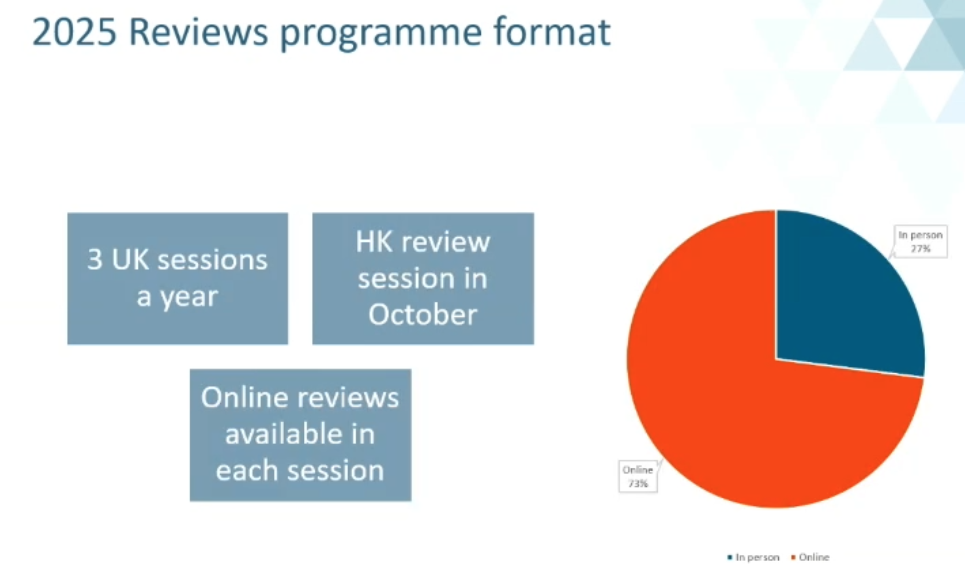
Please volunteer as much as you are able.
EPA updates
937 EPAs completed in 2025 (33% increase on 2024).
Fully Ofqual compliant in 2025.
74 paid Assessors now carry out all EPAs. More than sufficient for anticipated demand.
EPAs now carried out every month.
Plans for supporting Universities with EPAs for new Integrated Degree Apprenticeships are underway.
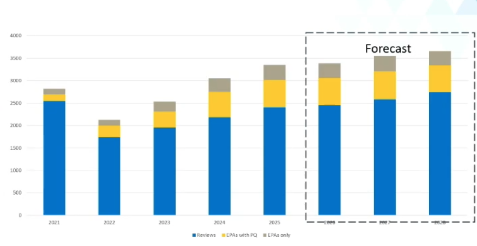
Review - blue
EPA with PQ - yellow
EPA only - grey
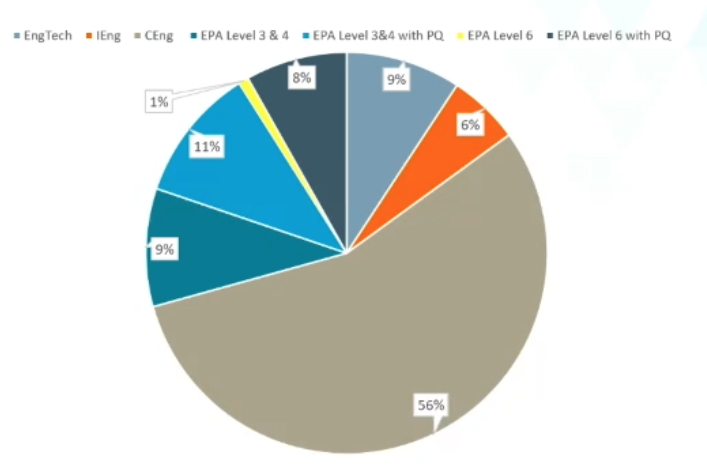
Pass rates#
Level |
Type |
Pass rate |
|---|---|---|
CEng |
Reviews |
69% |
CEng |
EPAs |
– |
IEng |
Reviews |
80% |
IEng |
EPAs |
83% |
EngTech |
Reviews |
89% |
EngTech |
EPAs |
79% |
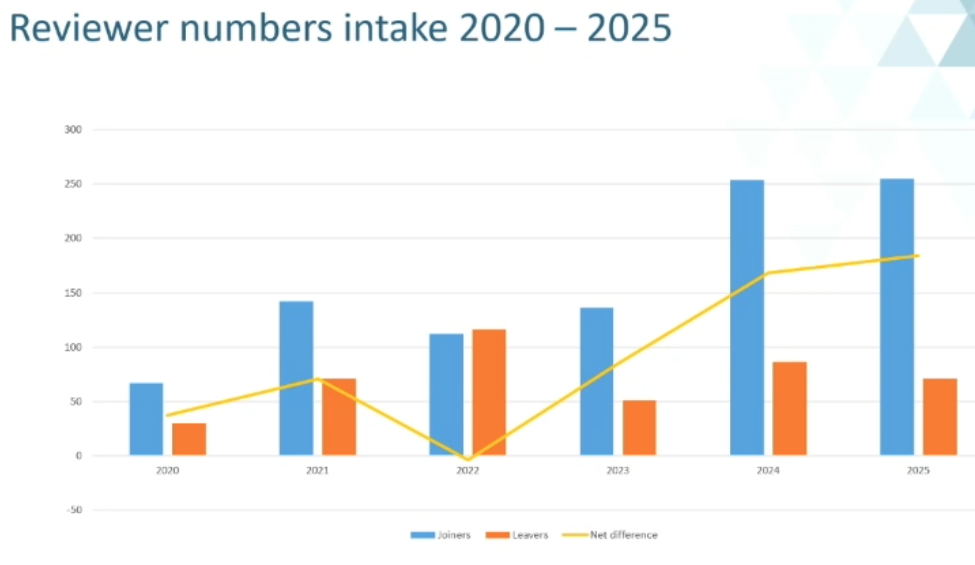
Reviewers are removed if inactive for too long.
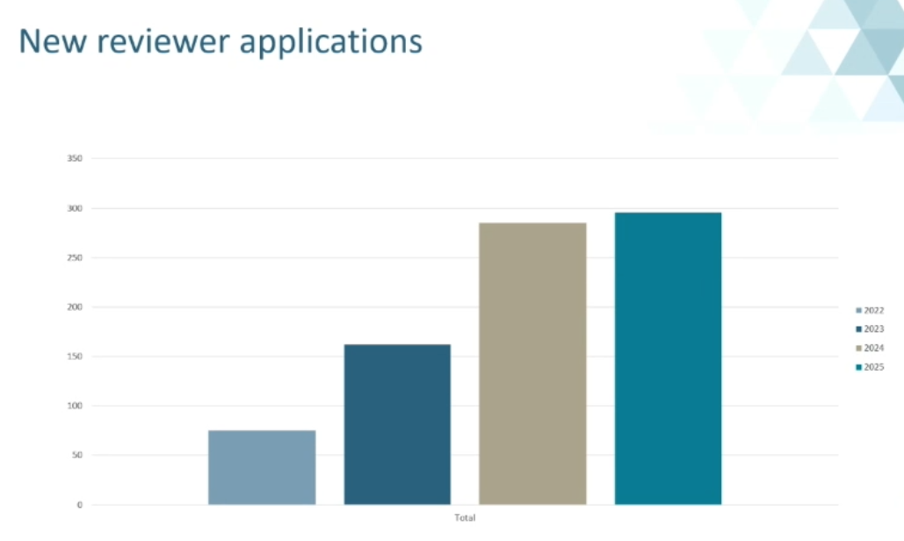
CEng members make up the majority of the reviewer pool. Aspiration to include more EngTech reviewers.
250 new reviewers trained in 2025.
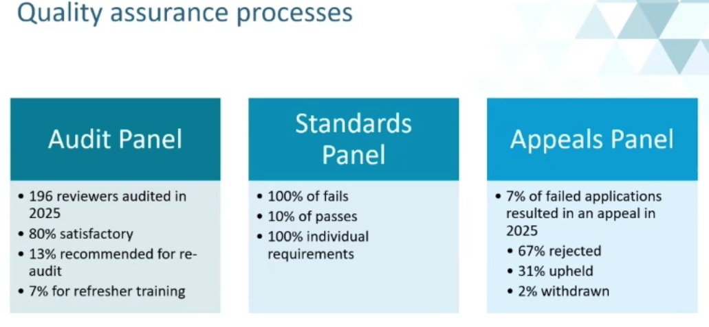
Feedback from QA panels#
Plan:
Share questions evenly and agree on your approach
Be friendly and welcoming:
Candidates should be made to feel welcome
Time management:
Do not spend too long on one attribute.
Start and finish the review on time.
Summary reports:
Ensure that the evidence in the report justifies the outcome
CPD activity 2025:
Reviewer briefings in-person and online
Briefing workshop on completing the paperwork (ICE305X)
Sustainability webinar
Temporary Works:
Survey sent to all reviewers, please respond by 10 April
PRP will consider if changes are necessary
Potential implementation to be balanced against existing high-priority projects
Q&A#
What about when candidates are climate change deniers..etc?
ICE is apolitical but has its own code of conduct on which it assesses.
How can you find out how candidates you’ve put forward for awards did?
You’re meant to get feedback, will chase up if it isn’t happening.
Will we hit 100,000 members?
Currently ~99,200. Briefly the ICE exceeded 100,000 but have dropped as members have
left.
Most engineers are looking for CEng, how to promote other grades?
The ICE promotes all grades. It’s up to employers too. We can’t all be CEng, companies
should recognise the contributions of technicians.
Good practice in reviewing workshop - Celebrating Engineering Technicians#
Malcolm Peake
Technicians are professionally competent practitioners. There is a need to recognise and celebrate the contribution of technicians.
The French Revolution (1789-1799)
The metric system (1791)
Semaphore telegraph (1792)
Hot air balloons - Compagnie d’Aérostiers (1794)
Engineering schools - École Polytechnique (1794)
The kilogramme (1795)
The graphite pencil (1795)
Marc Brunel came to the UK and was a leading light in the UK Industrial Revolution.
We know the names of the engineers but not the technicians.
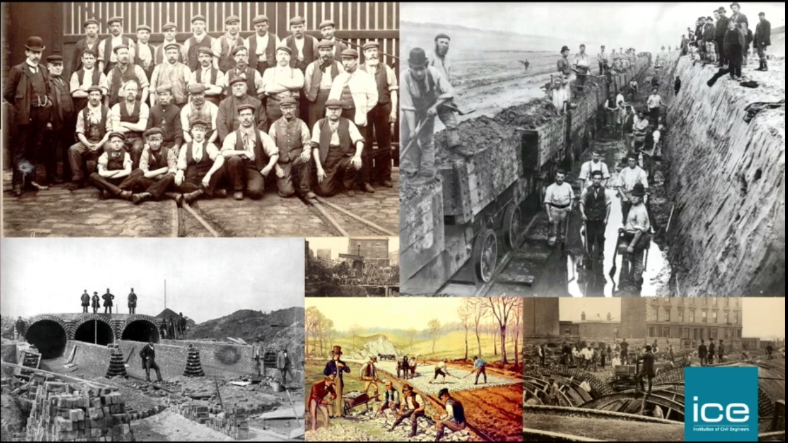
Industrial revolution led to increased urbanisation. Initially living conditions were very poor but Basilgette and others made it possible for large urban conurbations to be healthier/cleaner.
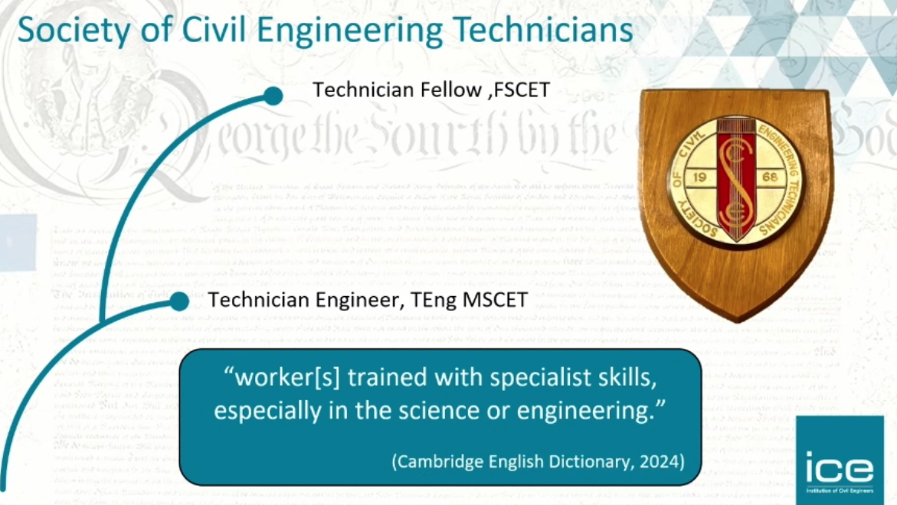
In 1968 SCET was formed. Ultimately in 1989 it merged into the ICE. Technician status is often seen as a stepping stone to Engineer, but to many it isn’t, and should it be? Many are happy in the technician role.
Many thought the emergence of CAD would spell the end of technicians in Civil Engineering, but it hasn’t. They’re as necessary as ever.
The technician community must be celebrated and respected.
Professional qualification raises their status and importance in the industry.
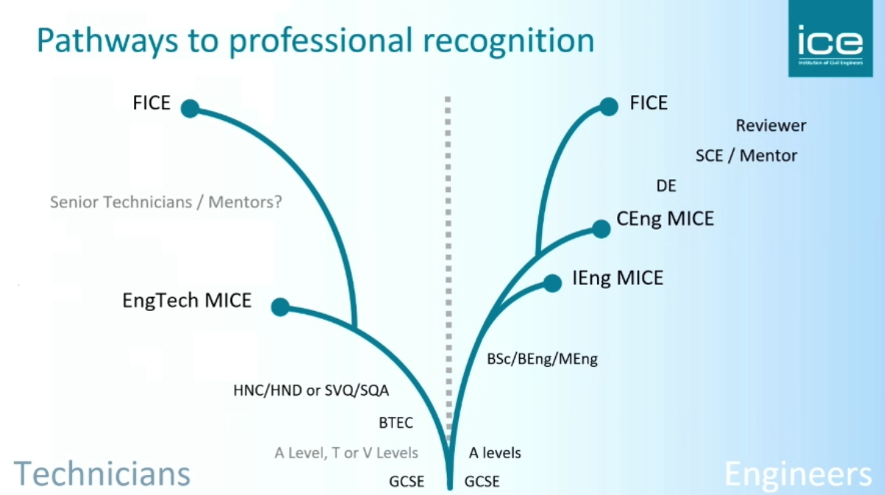
It is possible for technicians to cross over into engineering. But not all will or want to. Some junior engineers opt to go into a technician role because of their interest in the technology (namely advanced BIM and AI).
What do technicians do?
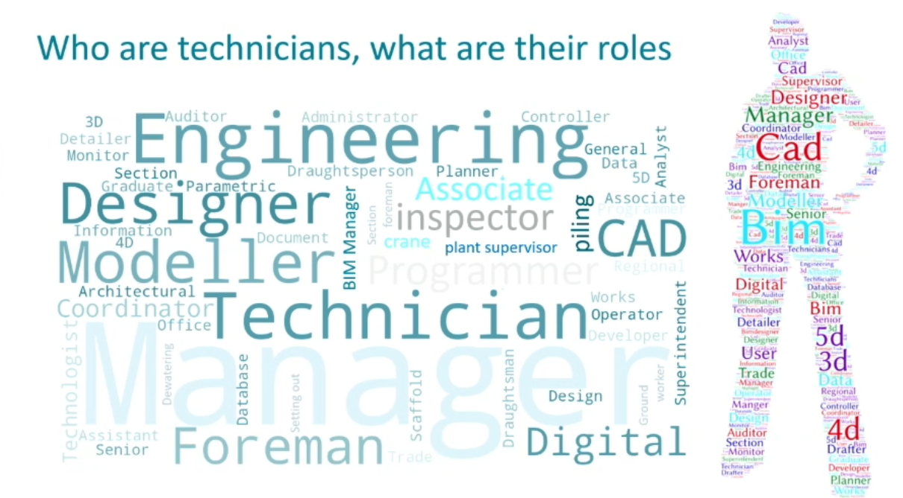
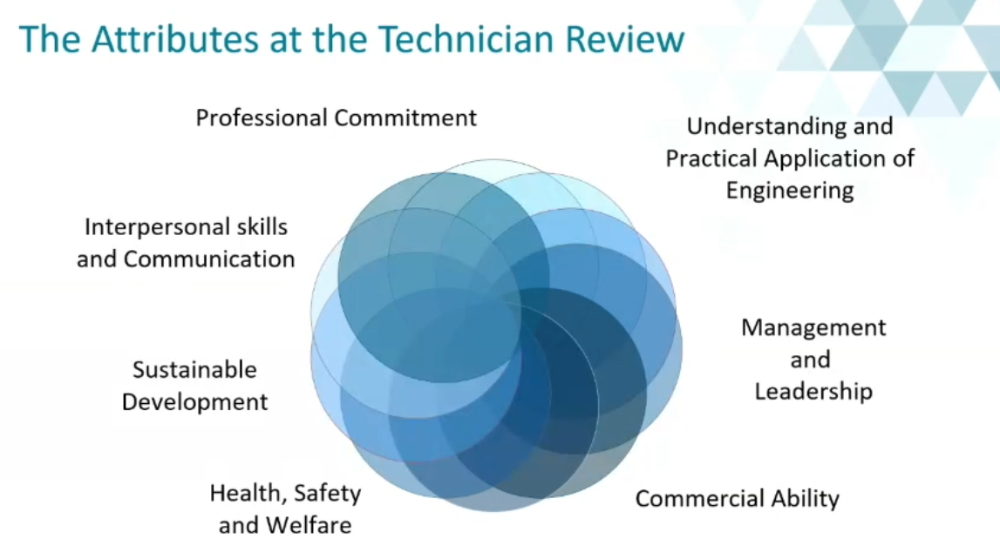
Slido poll#
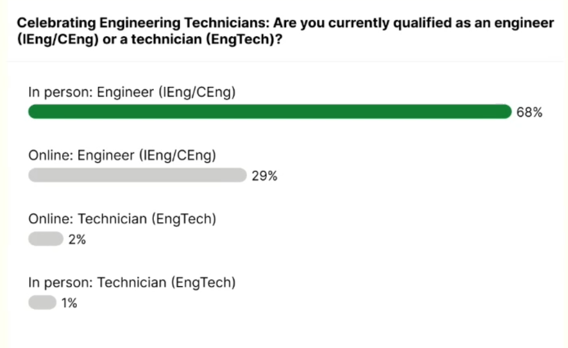
Big disparity between membership and reviewer percentages.
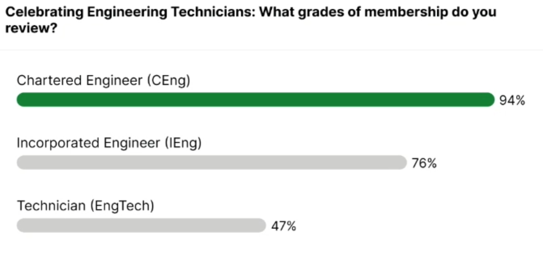
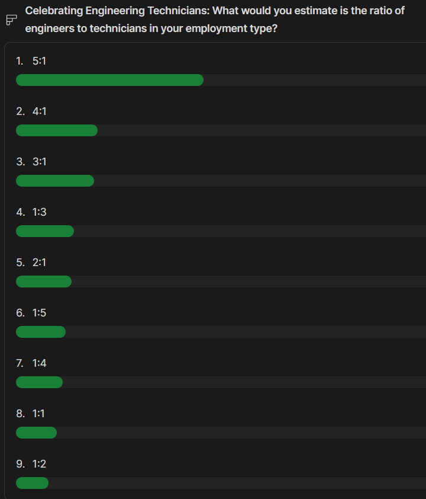
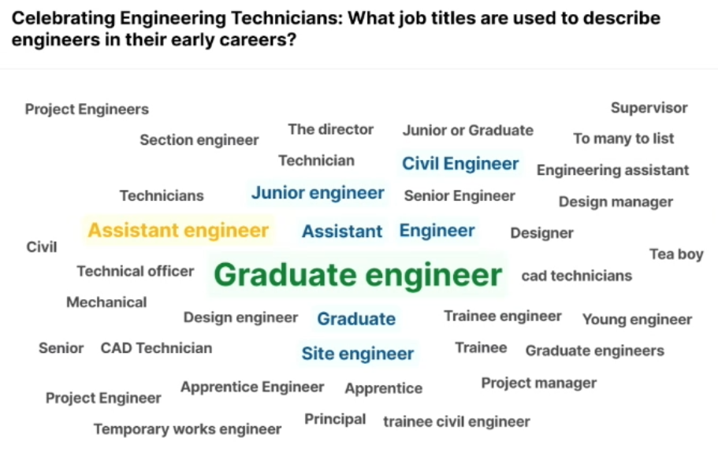
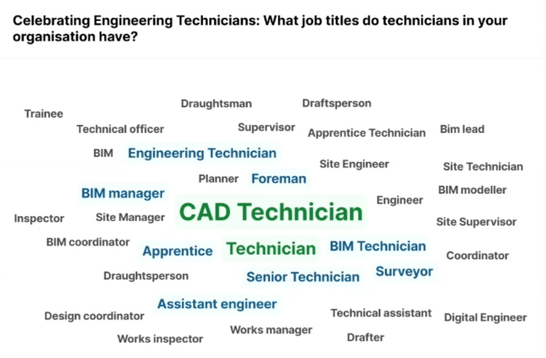
Building bridges between engineers and technicians#
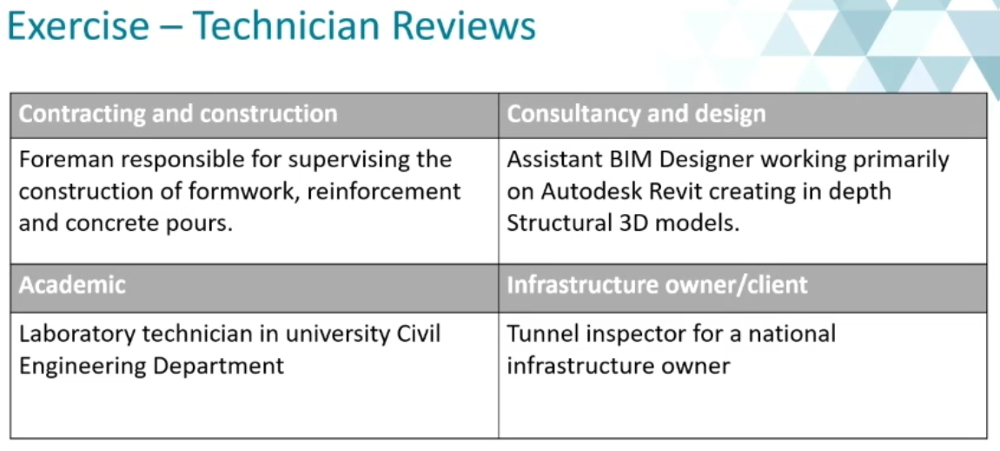
Activities:
What would these people do in a typical day?
Room 4 - Focus on 4 H&S, 6 Communications
6 - Communications:
quality checks on drawing output
model integrity for export to FEA, CFD
reinforcement detailing to IStructE standards
4 - H&S:
raise concerns with unsafe aspects of design
clash detection
What questions should we ask?
What H&S legislation is relevant to your work?
What is not compliant with H&S laws?
What is reasonable to build? How would you build it?
What would you do if you see something unsafe in the design?
Have you ever challenged the engineers design?
What are the most important things for making drawings clear?
What does a good/bad drawing look like?
How do you communicate hazards?
Consensus that asking questions on compensation events and contractual issues is unfair. Awareness of contractual issues may be expected but not detailed knowledge.
Has there been a time you’ve reduced the environmental impact of your project?
Were all the necessary permits in place? Did we check?
Asset management:
Why test concrete?
When should you strip formwork? Why keep registers?
How does the asset work you’re inspecting? What does it look like when it goes wrong?
How do you resolve conflict?
How do you manage your time?
How did you go about understanding the asset you’re inspecting?
How do you ensure you’re inspecting the right asset?
How did you resolve an access issue for an inspection?
Academic:
management of waste in the lab?
keeping data from experiments safe?
The ICE is doing more outreach events for technicians.
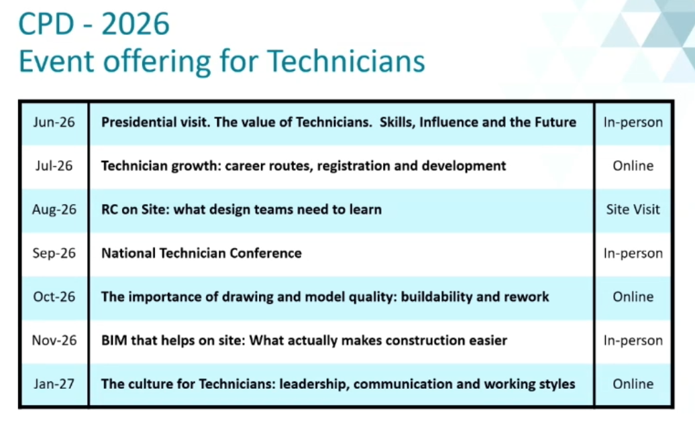
We need to encourage senior technicians to lead technicians in the industry.
Industry developments: Improving productivity in the industry#
Ed McCann
What is the point of civil engineering?
Think about the UNSDGs, we work towards providing those.
Productivity is closely related to efficiency
“It would be well if engineering were less generally thought of, and even defined, as the art of constructing. In a certain important sense it is rather the art of not constructing; or, to define it rudely but not inaptly, it is the art of doing that well with one dollar, which any bungler can do with two after a fashion.” Arthur Mellen Wellington
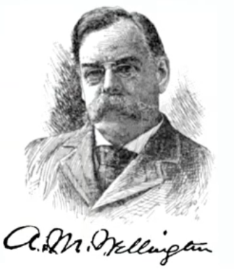
Lessons from Toyota:
Effectiveness - Focus on delivering value to the customer
Efficiency - Get rid of waste
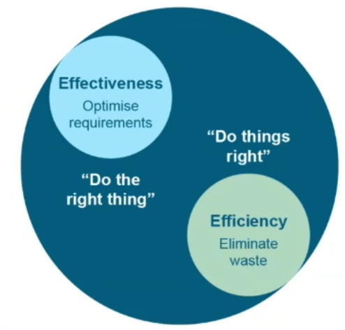
The government definition of productivity \(\neq\) the ICE’s definition
Productivity improvement is about continuously improving the processes we use.
To improve processes, we change the volume or quality of the capital inputs and/or improve how we use them.
For example, we can deploy better trained and more capable human capital, manage and arrange them differently, incentivise them to use manufactured capital (technology) more effectively.
Think about the Government Green Book to see what government values.
Social capital is massively underestimated in Civil Engineering.
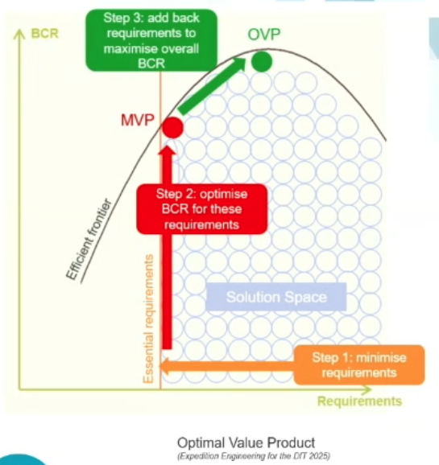
The first step is to find the minimum viable product, bare minimum to work. Add nice to haves until the return on investment diminishes.
Biggest value killer (one contracts manager): Reporting and paperwork
“within five years, the construction industry should deliver its products to its customers in the same way as the best consumer-led manufacturing and service industries. To achieve the dramatic increases in efficiency and quality that are both possible and necessary we must all rethink construction” 1998, Sir John Egan
Less than 0.5% of infrastructure projects are on time and to budget.
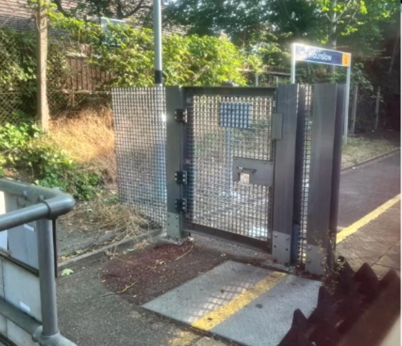
Ineffective security gate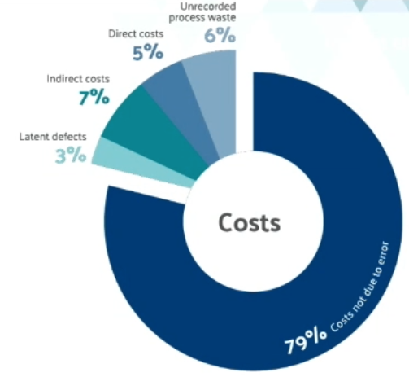
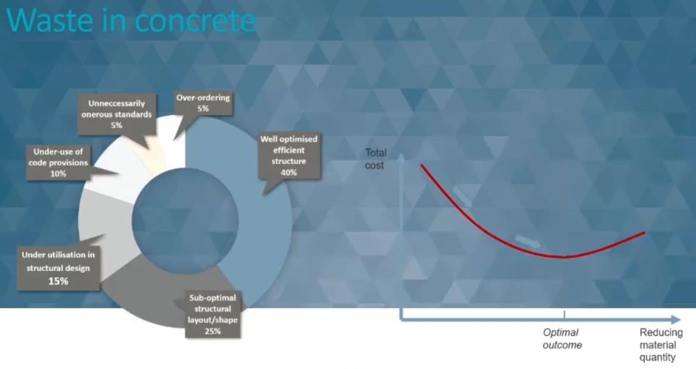
Over specification in buildings lead to 30-60% more material than needed.
That there are a lot of issues, including:
Fragmentation
Low levels of skills
Low level of technology adoption
Low investment in RD&I
Transactional & Confrontational
Inefficient
Low levels of profit
There’s a temptation to trust gurus … beware.
PAS 4010 Productivity management for infrastructure projects on the way. Conforming projects:
carry out a systematic analysis of the drivers of productivity within their project / program and to identify key risks and opportunities to productivity
produce a plan to manage the risks and opportunities
ensure that the plan is delivered
Exercise How can we get engineers focused on improving productivity within the industry?
How does innovation affect productivity? Any examples?
What productivity related questions could you ask candidates at each level of review for the attributes assigned to your group? Try to consider appropriate questions to ask of EngTech, IEng and CEng candidates (Groups will focus on different attributes)
Do you know where waste is coming from on your project?
Can engineers do some of what BIM technician’s do?
Standard design that is less efficient, or bespoke design(s) as lean as possible?
What is the motivation for consultants to design less if they’re paid by the hour?
Ask candidates what they might do differently to their managers. Decisions above their position.What are the risks associated with innovation?
Can we use AI to calculate quantities? Why or why not?
Understand production systems. How do materials move through the whole system?
Get designers and contractors together early. But it has to be people with the right
knowledge. 1st: what are you trying to do? 2nd: how are you going to do it?
McCann: Mistake when ICE removed the 1 year on site requirement for designers. Site
engineers also need to go into the design office.
Change takes courage.
Technology goes after expensive jobs that are repetitive and mechanisable.
Ed McCann (paraphrase)
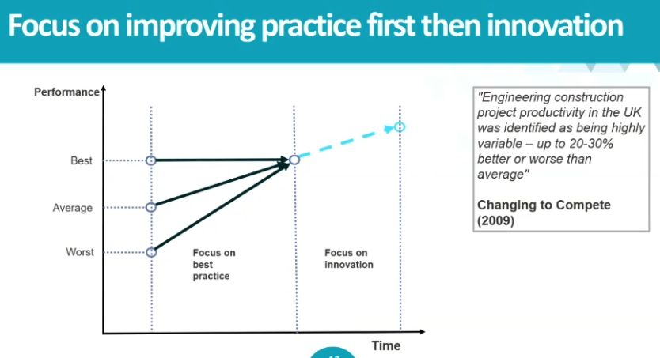
There’s a lot of variation in the construction industry around productivity. Getting our worst performing areas to our best is almost a doubling in productivity.
Innovations don’t always bring the promised improvements. BIM can be a case in point. In many areas it has made things slower and more expensive. Know why you’re doing something before you do it. We often under-deploy our best ideas. Ed McCann (paraphrase)
‘To do our work, we all have to read a mass of papers. Nearly all of them are far too long. This wastes time, while energy has to be spent in looking for the essential points. I ask my colleagues and their staff to see to it that their reports are shorter. The aim should be reports which set out the main points in a series of short, crisp paragraphs. If a report relies on detailed analysis of some complicated factors, or on statistics, these should be set out in an appendix. Often the occasion is best met by submitting not a full-dress report, but an ‘aide-memoire’ consisting of headings only, which can be expanded orally if needed. Let us have an end of such phrases as these: ‘It is also of importance to bear in mind the following considerations’, or ‘Consideration should be given to the possibility of carrying into effect’. Most of these woolly phrases are mere padding, which can be left out altogether, or replaced by a single word. Let us not shrink from using the short expressive phrase, even if it is conversational. Reports drawn up on the lines I propose may first seem rough as compared with the flat surface of officialese jargon. But the saving in time will be great, while the discipline of setting out the real points concisely will prove an aid to clearer thinking.’
Sir Winston Churchill, 9 August 1940
In manufacturing people talk about standard work, not products.
Foster an environment where people can challenge each other and are focussed on the
work.
Master-planning is where things fall down more than at the more detailed level. Reduce
vulnerability and interdependencies.
It’s a healthy thing to be uncomfortable (Ed McCann)
Q&A#
I had a communication task which seemed written by AI, what should I do?
ICE is looking into the advantages and disadvantages of AI. If you suspect voice
recognition is being used and a device is displaying advice, ask if they can show you
the room with the camera.
Is the communication task still of value?
What about sponsors who repeatedly sponsor under-prepared candidates?
There is no mechanism to challenge sponsors at the moment. We can look at that.
Employers need to focus on developing trainee’s knowledge. Make sure people aren’t over-reliant on it. They need to know if it’s telling them rubbish. It’s a great tool if you know what you’re doing.